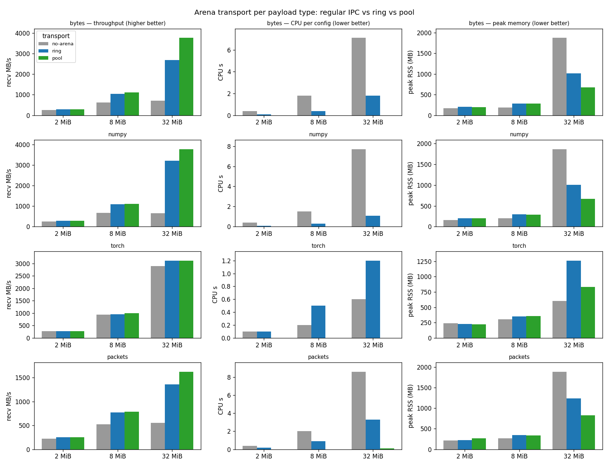

Benchmark arena transport¶
Targeted benchmark: arena transport throughput (regular IPC vs ring vs pool).
Measures how the shared-memory arena affects the cost of shipping large payloads
from a backend Pipeline running in a subprocess to the
main process, via spdl.pipeline.run_pipeline_in_subprocess().
A backend pipeline produces a fixed dataset of {"data": payload} items; the
main process receives them through one of three transports and does nothing with
them (a no-op stand-in for a training loop), so the measured throughput isolates
transfer + restore with no decode or other per-item work in the way:
no-arena — payloads are pickled over the multiprocessing queue (the default).
ring —
SharedMemoryRingBuffer; the reader copies each payload out of shared memory (so it cannot hand out live views).pool —
SharedMemorySegmentPool; the reader restores each payload as a zero-copy view directly over shared memory.
It sweeps payload sizes x four payload types — bytes, NumPy arrays, Torch
tensors, and spdl.io VideoPackets — each of which the arena offloads as a
large binary.
Results
From --isolate at 32 MiB on a CPU-only host (--num-items 16 --runs 10):
each (kind, transport) runs in its own freshly-spawned process, one at a time,
so the CPU s and peak RSS columns are attributable to that one config
(getrusage over the timed passes / from a pre-arena baseline; a single shared
process would accumulate both across configs and could not separate them). The
arena raises throughput and drops the CPU of moving a payload to near zero —
the pool restores a zero-copy view, so it does essentially no per-item work, while
plain IPC spends several CPU-seconds pickling and copying. bytes / NumPy gain
the most. Torch transfers tensors through shared memory itself (its
multiprocessing reducer), so plain IPC already avoids a bulk copy — its throughput
barely moves and plain IPC is already its leanest memory; the ring even adds CPU
(it copies out), yet the pool still drops its CPU to ~0. Packets gain less
throughput (restoring rebuilds the AVPacket structures) but the pool slashes
their CPU and memory too. peak RSS includes a fixed per-process baseline, so
compare it within a row; for bytes / NumPy / packets the no-arena pickle
buffers are the heaviest, and the pool the lightest.
kind transport recv MB/s speedup CPU s peak RSS MB
------------------------------------------------------------
bytes no-arena 719 1.00x 7.1 1872
bytes ring 2684 3.73x 1.8 1015
bytes pool 3760 5.23x 0.0 673
numpy no-arena 647 1.00x 7.7 1865
numpy ring 3202 4.95x 1.1 1009
numpy pool 3767 5.82x 0.0 669
torch no-arena 2899 1.00x 0.6 603
torch ring 3106 1.07x 1.2 1262
torch pool 3116 1.08x 0.0 834
packets no-arena 555 1.00x 8.6 1885
packets ring 1359 2.45x 3.3 1236
packets pool 1622 2.92x 0.1 825
(recv MB/s with speedup vs no-arena; CPU s and peak RSS are per-config,
lower is better. Throughput speedup grows with payload size — at 2 / 8 MiB
it is smaller; see the size sweep below.)
In the plot below, each line is one (kind, transport) across payload sizes (a separate throughput sweep): colour and marker encode the payload type and line style the transport (dotted = no-arena, dashed = ring, solid = pool); the shaded band is the ~95% confidence interval of the mean:

Example
$ python benchmark_arena_transport.py --sizes 2 8 32 --output results.csv
$ python benchmark_arena_transport_plot.py --input results.csv --output plot.png
Source¶
Source
Click here to see the source.
1#!/usr/bin/env python3
2# Copyright (c) Meta Platforms, Inc. and affiliates.
3# All rights reserved.
4#
5# This source code is licensed under the BSD-style license found in the
6# LICENSE file in the root directory of this source tree.
7
8# pyre-strict
9
10"""Targeted benchmark: arena transport throughput (regular IPC vs ring vs pool).
11
12Measures how the shared-memory arena affects the cost of shipping large payloads
13from a backend :py:class:`~spdl.pipeline.Pipeline` running in a subprocess to the
14main process, via :py:func:`spdl.pipeline.run_pipeline_in_subprocess`.
15
16A backend pipeline produces a fixed dataset of ``{"data": payload}`` items; the
17main process receives them through one of three transports and does nothing with
18them (a no-op stand-in for a training loop), so the measured throughput isolates
19**transfer + restore** with no decode or other per-item work in the way:
20
21- **no-arena** — payloads are pickled over the multiprocessing queue (the default).
22- **ring** — :py:class:`~spdl.pipeline.SharedMemoryRingBuffer`; the reader copies
23 each payload out of shared memory (so it cannot hand out live views).
24- **pool** — :py:class:`~spdl.pipeline.SharedMemorySegmentPool`; the reader
25 restores each payload as a zero-copy view directly over shared memory.
26
27It sweeps payload sizes x four payload types — ``bytes``, NumPy arrays, Torch
28tensors, and ``spdl.io`` ``VideoPackets`` — each of which the arena offloads as a
29large binary.
30
31**Results**
32
33From ``--isolate`` at 32 MiB on a CPU-only host (``--num-items 16 --runs 10``):
34each ``(kind, transport)`` runs in its own freshly-spawned process, one at a time,
35so the ``CPU s`` and ``peak RSS`` columns are attributable to that one config
36(``getrusage`` over the timed passes / from a pre-arena baseline; a single shared
37process would accumulate both across configs and could not separate them). The
38arena raises throughput *and* drops the CPU of moving a payload to near zero —
39the pool restores a zero-copy view, so it does essentially no per-item work, while
40plain IPC spends several CPU-seconds pickling and copying. ``bytes`` / NumPy gain
41the most. Torch transfers tensors through shared memory itself (its
42multiprocessing reducer), so plain IPC already avoids a bulk copy — its throughput
43barely moves and plain IPC is already its leanest memory; the ring even adds CPU
44(it copies out), yet the pool still drops its CPU to ~0. Packets gain less
45throughput (restoring rebuilds the ``AVPacket`` structures) but the pool slashes
46their CPU and memory too. ``peak RSS`` includes a fixed per-process baseline, so
47compare it within a row; for ``bytes`` / NumPy / packets the no-arena pickle
48buffers are the heaviest, and the pool the lightest.
49
50.. code-block:: text
51
52 kind transport recv MB/s speedup CPU s peak RSS MB
53 ------------------------------------------------------------
54 bytes no-arena 719 1.00x 7.1 1872
55 bytes ring 2684 3.73x 1.8 1015
56 bytes pool 3760 5.23x 0.0 673
57 numpy no-arena 647 1.00x 7.7 1865
58 numpy ring 3202 4.95x 1.1 1009
59 numpy pool 3767 5.82x 0.0 669
60 torch no-arena 2899 1.00x 0.6 603
61 torch ring 3106 1.07x 1.2 1262
62 torch pool 3116 1.08x 0.0 834
63 packets no-arena 555 1.00x 8.6 1885
64 packets ring 1359 2.45x 3.3 1236
65 packets pool 1622 2.92x 0.1 825
66 (recv MB/s with speedup vs no-arena; CPU s and peak RSS are per-config,
67 lower is better. Throughput speedup grows with payload size — at 2 / 8 MiB
68 it is smaller; see the size sweep below.)
69
70In the plot below, each line is one (kind, transport) across payload sizes (a
71separate throughput sweep): colour and marker encode the payload type and line
72style the transport (dotted = no-arena, dashed = ring, solid = pool); the shaded
73band is the ~95% confidence interval of the mean:
74
75.. image:: ../../_static/data/example_benchmark_arena_transport.png
76
77**Example**
78
79.. code-block:: shell
80
81 $ python benchmark_arena_transport.py --sizes 2 8 32 --output results.csv
82 $ python benchmark_arena_transport_plot.py --input results.csv --output plot.png
83"""
84
85from __future__ import annotations
86
87__all__ = [
88 "Row",
89 "create_video_data",
90 "main",
91 "read_csv",
92 "run_transport",
93 "write_csv",
94]
95
96import argparse
97import csv
98import gc
99import multiprocessing as mp
100import resource
101import statistics
102import tempfile
103import time
104from collections.abc import Iterator
105from dataclasses import asdict, dataclass, fields
106from itertools import product
107from typing import Any
108
109import numpy as np
110import spdl.io
111import torch
112from spdl.pipeline import (
113 PipelineBuilder,
114 run_pipeline_in_subprocess,
115 SharedMemoryRingBuffer,
116 SharedMemorySegmentPool,
117)
118
119_KINDS = ("bytes", "numpy", "torch", "packets")
120_TRANSPORTS = ("no-arena", "ring", "pool")
121# 4K frames: at the benchmark's payload sizes the encoder fills the bitrate with
122# real frame data instead of mostly CBR filler, so the packets resemble a real
123# high-resolution decode workload.
124_VIDEO_SIZE = "3840x2160"
125
126
127@dataclass(frozen=True)
128class Row:
129 """Row()
130
131 One benchmark measurement: throughput for a (size, kind, transport)."""
132
133 size_mb: int
134 """Requested payload size in MiB (the sweep knob)."""
135
136 kind: str
137 """Payload kind: ``"bytes"``, ``"numpy"``, ``"torch"``, or ``"packets"``."""
138
139 transport: str
140 """Transport used: ``"no-arena"``, ``"ring"``, or ``"pool"``."""
141
142 items_per_s: float
143 """Mean items received per second over the timed passes."""
144
145 mb_per_s: float
146 """Mean payload throughput in MB/s (``items_per_s`` x payload bytes)."""
147
148 mb_per_s_lo: float
149 """Lower bound of the ~95% confidence interval of ``mb_per_s`` (normal
150 approximation over the timed passes)."""
151
152 mb_per_s_hi: float
153 """Upper bound of the ~95% confidence interval of ``mb_per_s``."""
154
155 speedup: float
156 """``items_per_s`` relative to the no-arena baseline for this (size, kind)."""
157
158 peak_rss_mb: float = 0.0
159 """Peak resident memory of the config's process tree (consumer + producer), in
160 MB. Only populated by ``--isolate``; ``0`` otherwise. Shared arena pages may be
161 counted in both processes, so treat it as an upper-bound proxy and compare
162 within a (size, kind) row across transports."""
163
164 cpu_sec: float = 0.0
165 """Total CPU seconds (user + system, consumer + producer) the config consumed.
166 Only populated by ``--isolate``; ``0`` otherwise. Lower is better — moving a
167 payload via the arena should cost less CPU than the pickle + copy of plain IPC."""
168
169
170def create_video_data(target_bytes: int, duration_seconds: float = 2.0) -> bytes:
171 """Generate an H.264 MP4 whose stream is approximately ``target_bytes``.
172
173 Encodes low-entropy frames at a constant target bitrate (x264 CBR, which pads
174 with filler to hold the rate), so the serialized ``VideoPackets`` payload
175 scales with the requested size rather than collapsing to the content's natural
176 compressed size. Uses ``spdl.io``'s in-process encoder rather than the
177 ``ffmpeg`` CLI, so it also works on minimal container images that do not ship
178 the CLI.
179
180 Args:
181 target_bytes: Desired size of the encoded video stream, in bytes.
182 duration_seconds: Clip duration; the bitrate is derived from it.
183
184 Returns:
185 The encoded MP4 file contents as raw bytes.
186 """
187 width, height = (int(x) for x in _VIDEO_SIZE.split("x"))
188 frame_rate = (30, 1)
189 num_frames = max(1, round(frame_rate[0] / frame_rate[1] * duration_seconds))
190 bit_rate = max(64_000, int(target_bytes * 8 / duration_seconds))
191 kbps = bit_rate // 1000
192 batch_size = 4 # bound peak memory: 4K yuv444p frames are ~25 MiB each
193 with tempfile.NamedTemporaryFile(suffix=".mp4") as tmp_file:
194 muxer = spdl.io.Muxer(tmp_file.name)
195 encoder = muxer.add_encode_stream(
196 config=spdl.io.video_encode_config(
197 height=height,
198 width=width,
199 pix_fmt="yuv444p",
200 frame_rate=frame_rate,
201 bit_rate=bit_rate,
202 ),
203 encoder="libx264",
204 # CBR with a tight VBV so the encoder pads low-entropy frames with
205 # filler up to the target rate (mirrors the ffmpeg nal-hrd=cbr path).
206 encoder_config={
207 "preset": "ultrafast",
208 "x264-params": f"nal-hrd=cbr:vbv-maxrate={kbps}:vbv-bufsize={kbps}",
209 },
210 )
211 with muxer.open():
212 for start in range(0, num_frames, batch_size):
213 n = min(batch_size, num_frames - start)
214 array = np.zeros((n, 3, height, width), dtype=np.uint8)
215 frames = spdl.io.create_reference_video_frame(
216 array=array,
217 pix_fmt="yuv444p",
218 frame_rate=frame_rate,
219 pts=start,
220 )
221 if (packets := encoder.encode(frames)) is not None:
222 muxer.write(0, packets)
223 if (packets := encoder.flush()) is not None:
224 muxer.write(0, packets)
225 with open(tmp_file.name, "rb") as f:
226 return f.read()
227
228
229def _make_payload(kind: str, size: int, video_bytes: bytes | None) -> object:
230 """Build one payload of ``kind`` whose serialized size is roughly ``size``."""
231 if kind == "bytes":
232 return bytes(size)
233 if kind == "numpy":
234 return np.zeros(max(1, size // 4), dtype=np.float32)
235 if kind == "torch":
236 return torch.zeros(max(1, size // 4), dtype=torch.float32)
237 if kind == "packets":
238 assert video_bytes is not None
239 return spdl.io.demux_video(video_bytes)
240 raise ValueError(f"unknown kind: {kind}")
241
242
243def _payload_nbytes(kind: str, size: int, video_bytes: bytes | None) -> int:
244 """The on-the-wire size of one payload, used to size the arena."""
245 payload: Any = _make_payload(kind, size, video_bytes)
246 if kind == "packets":
247 return len(payload.__getstate__())
248 if kind == "numpy":
249 return int(payload.nbytes)
250 if kind == "torch":
251 return int(payload.element_size() * payload.nelement())
252 return len(payload)
253
254
255@dataclass(frozen=True)
256class _Dataset:
257 """A picklable finite dataset: yields ``num_items`` payload items.
258
259 Only the small spec is pickled into the subprocess; the payload itself is
260 built lazily in ``__iter__`` (i.e. in the worker), so shipping the dataset
261 across the process boundary stays cheap regardless of payload size.
262
263 Most kinds reuse one payload object so the measured per-item cost is transfer
264 + restore rather than construction. Torch is the exception: it moves a CPU
265 tensor's storage into shared memory in place on the first IPC send and reuses
266 it afterwards, so reusing one tensor would hide the real cost (a fresh
267 shared-memory segment per distinct tensor). It therefore yields a distinct
268 tensor per item, matching how a real pipeline produces tensors.
269 """
270
271 kind: str
272 size: int
273 num_items: int
274 video_bytes: bytes | None = None
275
276 def __iter__(self) -> Iterator[dict[str, object]]:
277 # Torch moves a CPU tensor's storage into shared memory in place on the
278 # first cross-process send and reuses that same segment for later sends of
279 # the *same* tensor (torch.multiprocessing's reducer + its storage cache).
280 # So if the benchmark reused one tensor, every send after the first would
281 # be nearly free and hide the real per-item cost (a fresh shm segment per
282 # distinct tensor) — build a distinct tensor per item for torch instead.
283 reused = (
284 None
285 if self.kind == "torch"
286 else _make_payload(self.kind, self.size, self.video_bytes)
287 )
288 for _ in range(self.num_items):
289 payload = (
290 reused
291 if reused is not None
292 else _make_payload(self.kind, self.size, self.video_bytes)
293 )
294 yield {"data": payload}
295
296
297def _make_arena(
298 transport: str, payload_nbytes: int, buffer_size: int, num_items: int
299) -> SharedMemoryRingBuffer | SharedMemorySegmentPool | None:
300 """Construct the arena for a transport mode, sized to hold a whole iteration.
301
302 The arena does not block the writer when full — it raises "shared-memory
303 arena full" and relies on the pipeline's queue backpressure to bound the
304 in-flight units. That bound only holds when the reader keeps up; when restore
305 is much slower than offload (e.g. rebuilding ``VideoPackets`` on a busy host),
306 the writer can get a whole iteration ahead. So size the arena for the
307 worst case — every item of one iteration in flight at once — which never
308 overruns regardless of the producer/consumer speed gap.
309 """
310 if transport == "no-arena":
311 return None
312 slots = max(2 * buffer_size + 6, num_items + 2)
313 unit = max(1 << 20, payload_nbytes * 2) # headroom for envelope + alignment
314 if transport == "ring":
315 return SharedMemoryRingBuffer(capacity=unit * slots)
316 if transport == "pool":
317 return SharedMemorySegmentPool(segment_size=unit, count=slots)
318 raise ValueError(f"unknown transport: {transport}")
319
320
321def run_transport(
322 dataset: _Dataset,
323 transport: str,
324 *,
325 payload_nbytes: int,
326 num_items: int,
327 buffer_size: int,
328 runs: int,
329 duration_sec: float = 0.0,
330 usage: list[float] | None = None,
331) -> list[float]:
332 """Run the backend pipeline once per timed pass; return per-pass items/second.
333
334 Builds a one-stage backend pipeline (source -> sink) that runs in a
335 subprocess via :py:func:`run_pipeline_in_subprocess`, ships its items to the
336 main process over ``transport``, and consumes them in a no-op loop. One warmup
337 pass is discarded; the per-pass throughput of each timed pass is returned so
338 the caller can summarize it (mean + confidence interval). The subprocess and
339 arena are reused across passes and torn down at the end.
340
341 Args:
342 dataset: The (picklable) backend data source.
343 transport: One of ``"no-arena"``, ``"ring"``, ``"pool"``.
344 payload_nbytes: On-the-wire size of one payload, used to size the arena.
345 num_items: Number of items per pass (must match ``dataset.num_items``).
346 buffer_size: Pipeline sink buffer size / arena in-flight unit count.
347 runs: Number of timed passes (used when ``duration_sec`` is not positive).
348 duration_sec: If positive, keep running timed passes until this many
349 seconds have elapsed instead of stopping after ``runs`` passes — used
350 for sustained, fixed-duration host-stat sampling by an external sampler.
351 usage: If given, one element is appended: the CPU seconds (user + system,
352 this process + the producer subprocess) spent across the timed passes.
353 The snapshot is taken *after* the warmup pass, so process-startup and
354 import costs are excluded and only the transport's per-item work counts.
355
356 Returns:
357 One throughput sample (items per second) per timed pass.
358 """
359 arena = _make_arena(transport, payload_nbytes, buffer_size, num_items)
360 config = (
361 PipelineBuilder()
362 .add_source(dataset)
363 .add_sink(buffer_size=buffer_size)
364 .get_config()
365 )
366 src = run_pipeline_in_subprocess(
367 config, num_threads=1, arena=arena, buffer_size=buffer_size
368 )
369 try:
370 for item in src: # warmup pass (subprocess spawn + first-touch costs)
371 del item
372 cpu_base = _cpu_now() # after warmup: imports + arena warm-up excluded
373 samples: list[float] = []
374 deadline = time.perf_counter() + duration_sec
375 while True:
376 n = 0
377 t0 = time.perf_counter()
378 for item in src:
379 n += 1
380 del item # release the view so the pool can recycle the segment
381 samples.append(num_items / (time.perf_counter() - t0))
382 assert n == num_items, f"{transport}: expected {num_items}, got {n}"
383 done_by_count = duration_sec <= 0 and len(samples) >= runs
384 done_by_time = duration_sec > 0 and time.perf_counter() >= deadline
385 if done_by_count or done_by_time:
386 break
387 if usage is not None:
388 usage.append(_cpu_now() - cpu_base)
389 return samples
390 finally:
391 # Drop the iterable so its finalizer closes + unlinks the arena before the
392 # next config reuses the shared-memory namespace.
393 del src
394 gc.collect()
395
396
397def _confidence_interval(samples: list[float]) -> tuple[float, float]:
398 """~95% confidence interval of the mean (normal approximation).
399
400 Degenerate cases (a single pass) return ``(mean, mean)``.
401 """
402 mean = statistics.mean(samples)
403 if len(samples) < 2:
404 return mean, mean
405 half = 1.96 * statistics.stdev(samples) / (len(samples) ** 0.5)
406 return mean - half, mean + half
407
408
409def _run_config(size_mb: int, kind: str, args: argparse.Namespace) -> list[Row]:
410 """Benchmark one (size, kind) across the selected transports; one Row each."""
411 size = size_mb << 20
412 # For packets, synthesize a clip whose serialized payload tracks ``size`` (the
413 # other kinds build a payload of exactly ``size`` bytes directly).
414 vb = create_video_data(size) if kind == "packets" else None
415 payload_nbytes = _payload_nbytes(kind, size, vb)
416 dataset = _Dataset(kind, size, args.num_items, vb)
417 factor = payload_nbytes / 1e6 # items/s -> MB/s
418 # First pass: run each transport in the requested order (order is preserved so
419 # the --duration-sec window markers stay aligned with an external sampler) and
420 # collect its mean + CI.
421 measured: list[tuple[str, float, float, float]] = []
422 for i, transport in enumerate(args.transports):
423 if i and args.gap_sec:
424 time.sleep(args.gap_sec) # idle valley between per-transport windows
425 if args.duration_sec:
426 # Timestamped window markers so externally-sampled host stats (e.g. an
427 # external once-per-minute CPU/memory sampler) can be attributed to each config.
428 print(
429 f"### begin {kind} {size_mb}M {transport} ts={time.time():.0f}",
430 flush=True,
431 )
432 samples = run_transport(
433 dataset,
434 transport,
435 payload_nbytes=payload_nbytes,
436 num_items=args.num_items,
437 buffer_size=args.buffer_size,
438 runs=args.runs,
439 duration_sec=args.duration_sec,
440 )
441 if args.duration_sec:
442 print(
443 f"### end {kind} {size_mb}M {transport} ts={time.time():.0f}",
444 flush=True,
445 )
446 mean = statistics.mean(samples)
447 lo, hi = _confidence_interval(samples)
448 measured.append((transport, mean, lo, hi))
449 # Second pass: resolve the no-arena baseline after every transport is measured,
450 # so speedup does not depend on the order transports were run (and defaults to
451 # 1.0 when no-arena was not among --transports).
452 baseline = next((m for (t, m, _lo, _hi) in measured if t == "no-arena"), 0.0)
453 return [
454 Row(
455 size_mb=size_mb,
456 kind=kind,
457 transport=transport,
458 items_per_s=mean,
459 mb_per_s=mean * factor,
460 mb_per_s_lo=lo * factor,
461 mb_per_s_hi=hi * factor,
462 speedup=mean / baseline if baseline else 1.0,
463 )
464 for transport, mean, lo, hi in measured
465 ]
466
467
468def _cpu_now() -> float:
469 """CPU seconds (user + system) for this process plus its reaped children."""
470 s = resource.getrusage(resource.RUSAGE_SELF)
471 c = resource.getrusage(resource.RUSAGE_CHILDREN)
472 return s.ru_utime + s.ru_stime + c.ru_utime + c.ru_stime
473
474
475def _peak_rss_mb() -> float:
476 """Peak RSS (self + reaped children) in MB (``ru_maxrss`` is KiB on Linux)."""
477 s = resource.getrusage(resource.RUSAGE_SELF)
478 c = resource.getrusage(resource.RUSAGE_CHILDREN)
479 return (s.ru_maxrss + c.ru_maxrss) / 1024
480
481
482def _isolated_worker(
483 kind: str,
484 size: int,
485 transport: str,
486 payload_nbytes: int,
487 num_items: int,
488 buffer_size: int,
489 runs: int,
490 vb: bytes | None,
491 q: "mp.Queue[tuple[str, object, float, float]]",
492) -> None:
493 """Run one config in this fresh process; report samples + CPU + peak RSS.
494
495 Run as the target of a freshly-spawned process. Because the process starts
496 clean and exits after one config, the measurements attribute resources to
497 *this* config alone — a single long-lived process accumulates them across
498 configs and cannot separate them, which is the whole point of ``--isolate``.
499 CPU is measured over the timed passes only (excludes this worker's and the
500 producer's import/startup cost); peak RSS is the growth from a baseline taken
501 before the arena and payloads are built. The video bytes are encoded in the
502 parent and passed in, so the encoder's footprint does not land in this peak.
503 """
504 try:
505 rss_base = _peak_rss_mb()
506 usage: list[float] = []
507 dataset = _Dataset(kind, size, num_items, vb)
508 samples = run_transport(
509 dataset,
510 transport,
511 payload_nbytes=payload_nbytes,
512 num_items=num_items,
513 buffer_size=buffer_size,
514 runs=runs,
515 usage=usage,
516 )
517 cpu = usage[0] if usage else 0.0
518 q.put(("ok", samples, cpu, _peak_rss_mb() - rss_base))
519 except Exception as e: # surface failure instead of hanging the parent
520 q.put(("err", f"{type(e).__name__}: {e}", 0.0, 0.0))
521
522
523def _run_isolated(
524 mp_ctx: "mp.context.BaseContext",
525 kind: str,
526 size: int,
527 transport: str,
528 payload_nbytes: int,
529 num_items: int,
530 buffer_size: int,
531 runs: int,
532 vb: bytes | None,
533) -> tuple[list[float], float, float]:
534 """Run ``_isolated_worker`` in a fresh process; return ``(samples, cpu, rss)``."""
535 q: "mp.Queue[tuple[str, object, float, float]]" = mp_ctx.Queue()
536 p = mp_ctx.Process( # pyre-ignore[16]
537 target=_isolated_worker,
538 args=(
539 kind,
540 size,
541 transport,
542 payload_nbytes,
543 num_items,
544 buffer_size,
545 runs,
546 vb,
547 q,
548 ),
549 )
550 p.start()
551 status, payload, cpu, rss = q.get()
552 p.join()
553 if status != "ok":
554 raise RuntimeError(str(payload))
555 return payload, cpu, rss # pyre-ignore[7]
556
557
558def _run_config_isolated(
559 size_mb: int, kind: str, args: argparse.Namespace, mp_ctx: "mp.context.BaseContext"
560) -> list[Row]:
561 """Benchmark one (size, kind), each transport in its own fresh process.
562
563 Per-process isolation is what makes the CPU-time and peak-RSS columns
564 meaningful: each transport's footprint is measured from a clean slate, so the
565 arena's shared-memory cost and the no-arena pickle/copy cost are attributable
566 rather than piled into one accumulating process.
567 """
568 size = size_mb << 20
569 # Encode in the parent so the (large) encoder footprint stays out of the
570 # per-config worker's peak RSS.
571 vb = create_video_data(size) if kind == "packets" else None
572 payload_nbytes = _payload_nbytes(kind, size, vb)
573 factor = payload_nbytes / 1e6 # items/s -> MB/s
574 # First pass: measure each transport in its own process.
575 measured: list[tuple[str, float, float, float, float, float]] = []
576 for transport in args.transports:
577 samples, cpu, rss = _run_isolated(
578 mp_ctx,
579 kind,
580 size,
581 transport,
582 payload_nbytes,
583 args.num_items,
584 args.buffer_size,
585 args.runs,
586 vb,
587 )
588 mean = statistics.mean(samples)
589 lo, hi = _confidence_interval(samples)
590 measured.append((transport, mean, lo, hi, cpu, rss))
591 # Second pass: resolve the no-arena baseline after every transport is measured,
592 # so speedup is order-independent (and defaults to 1.0 when no-arena was not
593 # among --transports).
594 baseline = next((m for (t, m, *_rest) in measured if t == "no-arena"), 0.0)
595 return [
596 Row(
597 size_mb=size_mb,
598 kind=kind,
599 transport=transport,
600 items_per_s=mean,
601 mb_per_s=mean * factor,
602 mb_per_s_lo=lo * factor,
603 mb_per_s_hi=hi * factor,
604 speedup=mean / baseline if baseline else 1.0,
605 peak_rss_mb=rss,
606 cpu_sec=cpu,
607 )
608 for transport, mean, lo, hi, cpu, rss in measured
609 ]
610
611
612def _table_header() -> str:
613 """Header for the pivoted table (one transport column group per row)."""
614 return f"{'kind':<8} {'size':>5} {'no-arena':>9} {'ring':>15} {'pool':>15}"
615
616
617def _cell(
618 idx: dict[tuple[int, str, str], Row], size_mb: int, kind: str, transport: str
619) -> str:
620 """MB/s for one (size, kind, transport), with speedup in (x); ``-`` if not run."""
621 r = idx.get((size_mb, kind, transport))
622 if r is None:
623 return "-"
624 if transport == "no-arena":
625 return f"{r.mb_per_s:.0f}"
626 return f"{r.mb_per_s:.0f} ({r.speedup:.2f}x)"
627
628
629def _table_row(idx: dict[tuple[int, str, str], Row], size_mb: int, kind: str) -> str:
630 """One pivoted row: no-arena/ring/pool MB/s, with ring/pool speedup in (x)."""
631 na = _cell(idx, size_mb, kind, "no-arena")
632 ring = _cell(idx, size_mb, kind, "ring")
633 pool = _cell(idx, size_mb, kind, "pool")
634 return f"{kind:<8} {size_mb:>4}M {na:>9} {ring:>15} {pool:>15}"
635
636
637def _print_table(rows: list[Row]) -> None:
638 """Print one row per (size, kind); transports are columns (MB/s, speedup)."""
639 idx = {(r.size_mb, r.kind, r.transport): r for r in rows}
640 keys = sorted(
641 {(r.size_mb, r.kind) for r in rows},
642 key=lambda k: (_KINDS.index(k[1]), k[0]),
643 )
644 header = _table_header()
645 print(header)
646 print("-" * len(header))
647 for size_mb, kind in keys:
648 print(_table_row(idx, size_mb, kind))
649 print("(throughput in MB/s; (Nx) = speedup over the no-arena baseline)")
650
651
652def _print_isolate_table(rows: list[Row]) -> None:
653 """One row per (size, kind, transport): throughput, CPU time, peak RSS.
654
655 Used for ``--isolate`` runs, where CPU and RSS are per-config (each transport
656 ran in its own process).
657 """
658 rows = sorted(
659 rows,
660 key=lambda r: (_KINDS.index(r.kind), r.size_mb, _TRANSPORTS.index(r.transport)),
661 )
662 header = (
663 f"{'kind':<8} {'size':>5} {'transport':<9} {'recv MB/s':>10} "
664 f"{'speedup':>8} {'CPU s':>7} {'peak RSS MB':>12}"
665 )
666 print(header)
667 print("-" * len(header))
668 for r in rows:
669 print(
670 f"{r.kind:<8} {r.size_mb:>4}M {r.transport:<9} {r.mb_per_s:>10.0f} "
671 f"{r.speedup:>7.2f}x {r.cpu_sec:>7.1f} {r.peak_rss_mb:>12.0f}"
672 )
673 print(
674 "(recv MB/s with speedup vs no-arena; CPU s and peak RSS are per-config, "
675 "lower is better)"
676 )
677
678
679def write_csv(rows: list[Row], path: str) -> None:
680 """Write benchmark rows to ``path`` as CSV (one column per :class:`Row` field)."""
681 names = [f.name for f in fields(Row)]
682 with open(path, "w", newline="") as f:
683 writer = csv.DictWriter(f, fieldnames=names)
684 writer.writeheader()
685 writer.writerows(asdict(r) for r in rows)
686 print(f"wrote {len(rows)} rows to {path}")
687
688
689def read_csv(path: str) -> list[Row]:
690 """Read benchmark rows written by :py:func:`write_csv`."""
691 with open(path, newline="") as f:
692 return [
693 Row(
694 size_mb=int(d["size_mb"]),
695 kind=d["kind"],
696 transport=d["transport"],
697 items_per_s=float(d["items_per_s"]),
698 mb_per_s=float(d["mb_per_s"]),
699 mb_per_s_lo=float(d["mb_per_s_lo"]),
700 mb_per_s_hi=float(d["mb_per_s_hi"]),
701 speedup=float(d["speedup"]),
702 peak_rss_mb=float(d.get("peak_rss_mb") or 0.0),
703 cpu_sec=float(d.get("cpu_sec") or 0.0),
704 )
705 for d in csv.DictReader(f)
706 ]
707
708
709def _parse_args() -> argparse.Namespace:
710 parser = argparse.ArgumentParser(
711 description="Arena transport throughput: regular IPC vs ring vs pool"
712 )
713 parser.add_argument("--num-items", type=int, default=300)
714 parser.add_argument("--buffer-size", type=int, default=3)
715 parser.add_argument(
716 "--sizes", type=int, nargs="+", default=[2, 8, 32], help="payload sizes (MiB)"
717 )
718 parser.add_argument("--runs", type=int, default=3)
719 parser.add_argument(
720 "--kinds",
721 nargs="+",
722 choices=_KINDS,
723 default=list(_KINDS),
724 help="payload types to benchmark",
725 )
726 parser.add_argument(
727 "--transports",
728 nargs="+",
729 choices=_TRANSPORTS,
730 default=list(_TRANSPORTS),
731 help="transports to benchmark (use one at a time to isolate host stats)",
732 )
733 parser.add_argument(
734 "--duration-sec",
735 type=float,
736 default=0.0,
737 help="if >0, run each (transport, kind, size) for this long instead of "
738 "--runs passes — for sustained host-stat sampling by an external sampler",
739 )
740 parser.add_argument(
741 "--gap-sec",
742 type=float,
743 default=0.0,
744 help="idle seconds inserted between transports, to separate per-transport "
745 "windows for once-per-minute host-stat sampling",
746 )
747 parser.add_argument(
748 "--isolate",
749 action="store_true",
750 help="run each (size, kind, transport) in its own fresh process and report "
751 "per-config CPU time and peak RSS (clean memory/CPU attribution, no "
752 "carryover between configs)",
753 )
754 parser.add_argument("--output", help="optional path to write results as CSV")
755 return parser.parse_args()
756
757
758def main() -> None:
759 """Sweep payload sizes x types x transports; print a table and optionally a CSV."""
760 args = _parse_args()
761 # spawn (not fork) so each isolated worker starts from a clean interpreter,
762 # giving comparable per-config peak RSS rather than inheriting the parent's.
763 mp_ctx = mp.get_context("spawn") if args.isolate else None
764 rows: list[Row] = []
765 for size_mb, kind in product(args.sizes, args.kinds):
766 try:
767 if mp_ctx is not None:
768 rows.extend(_run_config_isolated(size_mb, kind, args, mp_ctx))
769 else:
770 rows.extend(_run_config(size_mb, kind, args))
771 except (OSError, RuntimeError) as e:
772 # Building a kind's payload (e.g. encoding the packets clip) can fail
773 # on some hosts; skip that kind rather than abort the whole sweep.
774 print(f"### skip {kind} {size_mb}M: {type(e).__name__}: {e}", flush=True)
775 if args.isolate:
776 _print_isolate_table(rows)
777 else:
778 _print_table(rows)
779 if args.output:
780 write_csv(rows, args.output)
781
782
783if __name__ == "__main__":
784 main()
API Reference¶
Functions
- create_video_data(target_bytes: int, duration_seconds: float = 2.0) bytes[source]¶
Generate an H.264 MP4 whose stream is approximately
target_bytes.Encodes low-entropy frames at a constant target bitrate (x264 CBR, which pads with filler to hold the rate), so the serialized
VideoPacketspayload scales with the requested size rather than collapsing to the content’s natural compressed size. Usesspdl.io’s in-process encoder rather than theffmpegCLI, so it also works on minimal container images that do not ship the CLI.- Parameters:
target_bytes – Desired size of the encoded video stream, in bytes.
duration_seconds – Clip duration; the bitrate is derived from it.
- Returns:
The encoded MP4 file contents as raw bytes.
- run_transport(dataset: _Dataset, transport: str, *, payload_nbytes: int, num_items: int, buffer_size: int, runs: int, duration_sec: float = 0.0, usage: list[float] | None = None) list[float][source]¶
Run the backend pipeline once per timed pass; return per-pass items/second.
Builds a one-stage backend pipeline (source -> sink) that runs in a subprocess via
run_pipeline_in_subprocess(), ships its items to the main process overtransport, and consumes them in a no-op loop. One warmup pass is discarded; the per-pass throughput of each timed pass is returned so the caller can summarize it (mean + confidence interval). The subprocess and arena are reused across passes and torn down at the end.- Parameters:
dataset – The (picklable) backend data source.
transport – One of
"no-arena","ring","pool".payload_nbytes – On-the-wire size of one payload, used to size the arena.
num_items – Number of items per pass (must match
dataset.num_items).buffer_size – Pipeline sink buffer size / arena in-flight unit count.
runs – Number of timed passes (used when
duration_secis not positive).duration_sec – If positive, keep running timed passes until this many seconds have elapsed instead of stopping after
runspasses — used for sustained, fixed-duration host-stat sampling by an external sampler.usage – If given, one element is appended: the CPU seconds (user + system, this process + the producer subprocess) spent across the timed passes. The snapshot is taken after the warmup pass, so process-startup and import costs are excluded and only the transport’s per-item work counts.
- Returns:
One throughput sample (items per second) per timed pass.
- write_csv(rows: list[Row], path: str) None[source]¶
Write benchmark rows to
pathas CSV (one column perRowfield).
Classes
- class Row[source]¶
One benchmark measurement: throughput for a (size, kind, transport).
- cpu_sec: float = 0.0¶
Total CPU seconds (user + system, consumer + producer) the config consumed. Only populated by
--isolate;0otherwise. Lower is better — moving a payload via the arena should cost less CPU than the pickle + copy of plain IPC.
- mb_per_s_lo: float¶
Lower bound of the ~95% confidence interval of
mb_per_s(normal approximation over the timed passes).